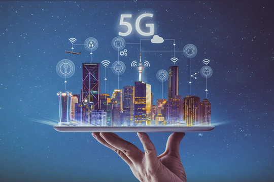

5G Technology: Revolutionizing Mobile Communications
In recent years, 5G technology has emerged as a game-changer in the world of mobile communications. Promising faster speeds, lower latency, and greater connectivity, 5G is set to revolutionize how we interact with technology and each other. This blog delves into the transformative impact of 5G technology, exploring its key features, benefits, and implications for the future.

What is 5G?
5G, or fifth-generation technology, is the latest advancement in mobile network technology, succeeding 4G LTE. It promises to deliver ultra-fast internet speeds, enhanced connectivity, and significantly lower latency, creating a more seamless and efficient user experience.
Key Features of 5G
- Increased Speed
- Download Speeds: 5G networks are designed to deliver download speeds up to 10 Gbps, significantly faster than the maximum speeds offered by 4G LTE.
- Upload Speeds: Enhanced upload speeds also mean quicker data transfer, which is crucial for applications like video streaming and cloud-based services.
- Low Latency
- Real-Time Communication:5G reduces latency to as low as 1 millisecond, which is a substantial improvement over 4G's latency of around 30 milliseconds. This near-instantaneous communication is essential for applications such as autonomous vehicles and virtual reality.
- Enhanced Capacity and Connectivity
- IoT Integration: 5G supports a massive number of connected devices per square kilometer, paving the way for the Internet of Things (IoT) to expand further. This capability will enhance smart cities, with interconnected devices managing everything from traffic lights to home appliances.
- Network Slicing
Customizable Networks: 5G technology allows for network slicing, which means creating multiple virtual networks on a single physical 5G network. This customization can optimize performance for different types of services, such as emergency services or entertainment.
Benefits of 5G
- Improved Mobile Experience
- Faster speeds and lower latency mean that streaming, gaming, and browsing will be smoother and more enjoyable. The increased bandwidth also allows for higher quality video streaming and more stable connections.
Advancements in Technology
- Autonomous Vehicles:5G’s low latency and high reliability are crucial for the development and operation of self-driving cars, enabling real-time communication with other vehicles and infrastructure.
- Healthcare:Remote surgeries and telemedicine will benefit from the high-speed, reliable connections provided by 5G, making healthcare more accessible and effective.
Economic Growth
- Job Creation:The rollout of 5G technology is expected to create numerous job opportunities in sectors such as network infrastructure, software development, and tech support.
- Innovation:By enabling new technologies and applications, 5G will drive innovation and open up new markets, contributing to economic growth.
Challenges and Considerations
While the benefits of 5G are substantial, there are also challenges to consider:
- Infrastructure Costs:Building and deploying 5G networks require significant investment in infrastructure, which may be a barrier for some regions.
- Health Concerns: Some studies and concerns about the health effects of 5G radiation are still being debated, though many experts and regulatory bodies assert that 5G technology is safe.
The Future of 5G
As 5G technology continues to evolve, its impact on mobile communications and beyond will only grow. The ongoing development of 5G infrastructure, coupled with advancements in technology, promises to unlock new possibilities and drive progress in various fields. From smarter cities to more immersive experiences, 5G is set to shape the future of connectivity.
In summary, 5G technology represents a significant leap forward in mobile communications. Its increased speed, lower latency, and enhanced connectivity are transforming how we interact with technology and each other. As we continue to explore and develop this groundbreaking technology, its potential to revolutionize our world becomes increasingly apparent.
The Road Ahead
While 5G holds immense potential, its rollout is still in progress, with many regions only beginning to implement the technology. Challenges such as infrastructure development, spectrum allocation, and regulatory considerations need to be addressed to fully realize 5G's benefits. However, as the technology matures and becomes more widespread, its impact on our daily lives and industries will become increasingly profound.
In conclusion, 5G is not just an incremental upgrade but a transformative leap forward in mobile communications. Its unprecedented speeds, low latency, and extensive connectivity are set to revolutionize numerous aspects of our world, from smart cities and autonomous vehicles to healthcare and entertainment. As we continue to explore and harness the potential of 5G, we stand on the cusp of a new era in connectivity and technological innovation.